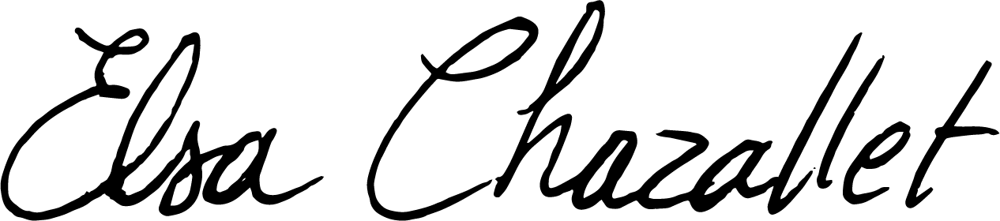

-Texte de présentation à venir.
Email : exemple@domaine.fr
Instagram : @ton-compte
2026 / [Exposition collective] Chemillé (49).
Valorisation des créateurs dans les FabLabs pour les 10 ans du bocal de Chemillé.
2026 / [Performance] pour Nov'Art, Rives du Loir en Anjou
(49).
Médiation chantée et improvisée, à destination du public de No'Art 2026.
2025/ Rally tampon, Inauguration Métamorphose, Angers
(49).
Rally Tampon participatif réalisé pour l’inauguration de l’immeuble métamorphose
à Angers.
2025/ Rally Tampon, 140 ans de Giffard, Angers (49).
Rally Tampon participatif réalisé pour l’anniversaire des 140 ans de Giffard.
2025/ [Exposition] + [Performance chantée] « Passant.es », Trélazé (49).
Commissariat Hélène Cheguillaume.
Exposition des jeunes diplômés de l’ESAD d’Angers, aux anciennes écuries de Trélazé.
2024/ [Exposition] « Giffard inspire les jeunes designers », Angers (49).
Commissariat Elsa Chazallet et Victor Chaplais.
Exposition dans l’ancienne distillerie pour promouvoir le patrimoine industriel du liquoriste angevin, Giffard.
2024/ [Exposition] « ZONE BLANCHE « jeunes designers », Angers (49).
Commissariat Lucie Plessis.
Exposition des jeunes diplômés à la galerie 5 de la bibliothèque universitaire à Belle Beille.
2024/ [Exposition] « Fresh Oddities », Angers (49).
Comissariat Lucie Plessis.
Mettre à l’honneur la bibliothèque universitaire de belle beille, Galerie 5 de l’Université d’Angers.
2023/ [Performance] Made in Cndc x B.A.D., Angers (49).
Mise en scène Julien Lacroix.
collaboration entre B.A.D design et le Centre National de Danse Contemporaine.
2022/ [Scénographie Collective] Symposium international, La pensée active de Gilles Deleuze, Angers (49).
Comissariat BDD (Bloc de Devenir).
Concerts, Conférences et Banquet.
2022/ [design/paysagisme] Jardin minéral du château d’eau, Trélazé (49).
Cinquième prix pour l’Appel à projet pour la valorisation du château d’eau de la manufacture de Allumettes.
2021/ [Exposition] L’atelier des mémoire vives et imaginaires, Chapelle Saint Louis, Poitiers (86).
Commissariat Christophe Legac.
Une histoire des relations entre l’art et l’informatique.
La boutique arrive bientôt.